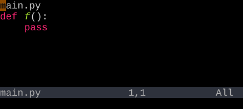
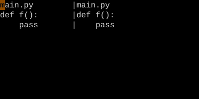

Creating Splits
Open more than one viewport onto the same workspace.
Ctrl-Ws splits the current window horizontally; Ctrl-Wv splits vertically.:spand:vsdo the same and can take a filename to open in the new split.
A window is a viewport. Splits give you more than one. Ctrl-W s stacks two viewports vertically (a horizontal split). Ctrl-W v puts them side by side (a vertical split).
| Key | Note |
|---|---|
| {key:Ctrl-W} | |
| s |
| Key | Note |
|---|---|
| {key:Ctrl-W} | |
| v |
| Key | Note |
|---|---|
| : | |
| s | |
| p | |
| {file} | |
| Enter |
| Key | Note |
|---|---|
| : | |
| v | |
| s | |
| {file} | |
| Enter |
Worked example — :split and :vsplit
Two views of one buffer (or two).


Each split is an independent view. Use Ctrl-W h/j/k/l to navigate.
See also: Navigating Windows, Move and Resize Windows, Buffer vs Window vs Tab